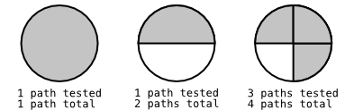
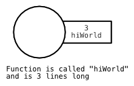

Trellus: v0.0.1
Function Bodies With Code Paths
Testing of Code Paths

Labeling

Inputs
Labeled Inputs
Functions/Behavior Attached to an Object
(their this)
State/Attributes Attached to an Object
(their this)
Outputs
(return values)
Side-Effects
Multiple Inputs and Side Effects
Complex Inputs
Complex Inputs with Labels
Side Effect that Call a Function
Passing input to another function
Returning the call of another function
Inputs
Inputs
Inputs
Inputs
Inputs
Inputs
Inputs
Inputs